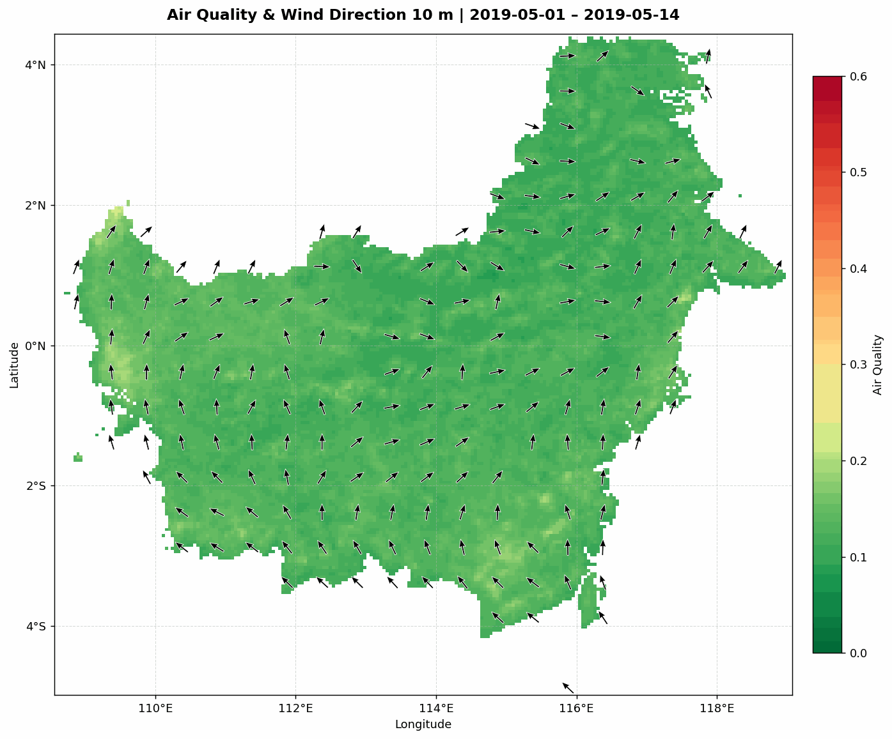

Animasi Spasiotemporal Dinamika Habitat Orangutan
Periode Perekaman: 1 Mei 2019 – 30 Oktober 2019
Visualisasi animasi runut waktu pergerakan kabut asap kebakaran hutan dan lahan (karhutla) serta dinamika penyusutan habitat sementara orangutan di bentang alam Kalimantan.

Interpretasi Dinamika (Mei – Oktober 2019)
Animasi ini merekam fluktuasi spasial selama 6 bulan krisis kebakaran El-Niño 2019. Pada bulan Mei–Juni, habitat relatif stabil di kubah gambut Mawas dan Sebangau. Memasuki puncak kekeringan Juli–September, lonjakan titik api dan emisi PM2.5 memicu kabut asap lintas batas (transboundary haze) yang menekan luasan habitat sementara orangutan hingga terkonsentrasi di kantong-kantong inti kanopi yang tersisa.
Format berkas:
assets/animations/mawas_animation.gif